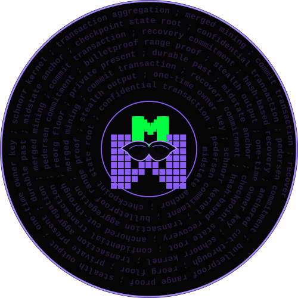

Private transactions
Confidential amounts, aggregated range proofs, stealth outputs and one-time owner keys. Only the recipient can spend.

midwimbleMidwimble is a MimbleWimble privacy chain, merge-mined with and anchored to Midstate. Amounts are hidden, there are no addresses on chain, and every coin carries a dormant hash-based claim that could recover it if elliptic curves are ever broken.
Most blockchains preserve every payment as archaeology.
Midwimble starts from a different premise.
A privacy coin that gets its security from Midstate's miners and its long-term memory from Midstate's post-quantum chain.
Most blockchains publish every payment forever: who sent it, who got it, and how much. Midwimble doesn't. Amounts are hidden inside cryptographic commitments, and outputs pay one-time keys instead of visible addresses. Anyone can still check that no coins were created out of thin air, because the maths proves the totals balance without showing them.
Midwimble is its own chain, with its own coin, its own supply and its own consensus rules. It isn't pegged to Midstate and doesn't move Midstate coins.
Merge-mining. Midstate and Midwimble use the same proof of work, so a Midstate miner can mine both chains with the same hashing, at almost no extra cost.
Anchoring. Checkpoints of Midwimble's state are written into Midstate. They give Midwimble a finality floor and a recovery point if its cryptography ever breaks. Midstate needs no changes for either: to a Midstate node an anchor is just an ordinary transaction or a value in a coinbase.
About 23,000 lines of Rust: Midstate's networking and consensus, Pluribit's MimbleWimble transactions (hardened, with an ownership fix), and new code for merged mining, anchoring, recovery and pruning.
Confidential amounts, aggregated range proofs, stealth outputs and one-time owner keys. Only the recipient can spend.
Mined alongside Midstate with the same hashing. Checkpoints are committed into Midstate as a transaction or free through merged mining.
Every output carries a hidden hash-based recovery commitment that stays unused unless elliptic curves are ever broken.
Optional: nodes can delete old block bodies below a finalized Midstate checkpoint and bootstrap from a verified snapshot.
Every figure here is fixed in the code (src/core/types.rs) or the published launch parameters. Anyone can check them with midwimble params.
| Type | MimbleWimble privacy chain, merge-mined with and anchored to Midstate. Its own coin, supply and consensus; no peg. |
|---|---|
| Ticker | to be announced |
| Decimals | 8 (1 coin = 100,000,000 base units) |
| Max supply | 1,000,000 coins, reached exactly |
| Premine | None. Every coin is a block reward. |
| Block time | 60 seconds (target) |
| Difficulty | ASERT, 4-hour half-life, anchored to genesis |
| Proof of work | Sequential BLAKE3, 1,000,000 iterations (same as Midstate) |
| Merge-mining | With Midstate. Proofs about 220 bytes; no Midstate changes. |
| Mining requirement | A bond locked on Midstate: 128 gMDS (237 units) with 30 days of lock left, from 31 Oct 2026 |
| Block reward | Ramps up over the first 30 days, then 0.23932616 per block |
| Halving | Every 2,100,000 blocks (about 4 years). First around 13 Oct 2030. |
| End of issuance | About block 49.7 million (around 2121); fees only after that |
| Coinbase maturity | 100 blocks |
| Transactions | Pedersen commitments on Ristretto255, aggregated Bulletproofs, stealth one-time owner keys |
| Addresses | Bech32, prefix mw, v1: scan key + spend key + post-quantum recovery key |
| Propagation | Dandelion++ (being hardened) |
| Min relay fee | 100 base units per weight unit (node policy). A typical payment: 0.000046 coins. |
| Block / tx limit | 40,000 / 10,000 weight units |
| Finality | 100 blocks after a checkpoint anchored with 1,000 Midstate confirmations |
| Anchoring | About every 10,000 blocks (about a week) |
| Post-quantum | Dormant hash-based (MSS) recovery commitment on every output |
| Genesis | 16 Oct 2026, 03:41 UTC. Anchored to Bitcoin block 971,656 and Midstate block 334,607. |
| Genesis block | 7c45a2ef9d2f76134fe35f6016ef7df0dfef8d4f29dd5d02d4ae8144a10139b5 |
| Network magic | MIDWIMBLE_TESTNET_V3 (kept for good on mainnet) |
| Mainnet | 31 Oct 2026, 00:00 UTC, in place, with no restart |
| Licence | GPL-3.0-or-later |
| Audit | None yet |
The whole supply is mined out as block rewards on a fixed schedule written into consensus. The last block to mint pays whatever is left, so issuance stops at exactly 1,000,000.00000000.
The schedule is defined by its running total, so any node can check a claimed supply at any height in microseconds. Nodes that start from a checkpoint snapshot check the snapshot's supply too, so the cap never depends on trusting whoever served it.
Midstate halves around late February each year. Midwimble's launch date keeps its halvings months away from Midstate's, so merge-miners never take two revenue cuts at once.
What Midwimble hides, and an honest list of what it doesn't.
Receiver-only spend authority. Every output carries a one-time
owner key (Ko = H(t)·G + B), so the recipient and only the
recipient can spend it. Sending needs only the recipient's address, with
no back-and-forth between wallets.
A view key sees every payment to your address and its amount, and can spend none of them. Privacy becomes a choice you can selectively waive, not an all-or-nothing wall.
An accountant, an auditor, or anyone who should see what you receive. You decide who gets it.
Browser wallet: Receive → View key → Show view key. Command line: midwimble wallet view-key.
A miner's own software uses its view key to confirm the pool paid exactly what it owes, without the key leaving the miner.
The view key covers payments to the address. Never share your recovery phrase: that's the spend key. The view key is the one you share.
A Midstate miner puts a small commitment to a Midwimble block in its Midstate coinbase. If that Midstate block also meets Midwimble's target, it's a Midwimble block too. One search mines both chains.
The merge-mining pool at rpc.cypherpunk.gold/pool mines Midwimble alongside Midstate. Keep mining as normal and add a Midwimble address. No bond needed.
Pool fee: 12.5% for now. It's temporary while Midwimble gets going.
Against your own Midstate node: midwimble merge-mine. Needs a bond.
midwimble pool and midwimble pool-mine. The provably fair design pays PPLNS directly in the coinbase.
A block must be signed by a mining key that a bond on Midstate authorises. A bond is an ordinary Midstate coin locked until a set height. Proof of work alone decides who finds a block: a 1,000 gMDS bond mines exactly as hard as the minimum, and there's no slashing.
About every 10,000 blocks, a checkpoint of Midwimble's state is written into Midstate: as an ordinary Commit transaction, or for free inside a merge-mined Midstate block. It records that a state existed, not who paid whom.
Finality. Once the anchor has 1,000 Midstate confirmations, the chain is 100 blocks past the checkpoint, and no conflicting anchor is known, no reorganisation can reach below it, however much work a competing chain claims. Forging the evidence would cost about an hour of Midstate's entire network.
This state existed.
version 1
network midwimble
height <block height>
header_hash <32 bytes>
state_root <32 bytes>
cumulative_work <chain work>
previous <previous checkpoint>
anchor → MIDSTATE
commit tx | merge-mined coinbase
finality 1,000 midstate confs + 100 blocksMidwimble's everyday cryptography uses elliptic curves, like most privacy coins, and a large enough quantum computer would break it. So every output also carries a hidden recovery commitment tied to the recipient's hash-based (MSS) key, which is part of every v1 address.
If curves are ever broken, a future hard fork can activate a recovery epoch at an anchored checkpoint from before the break. Owners reclaim their coins with hash-based signatures. Elliptic-curve keys aren't consulted, so an attacker holding every curve secret still can't claim them, and total claims are capped at the checkpoint's supply.
Weights follow Grin: an input is 1, an output 21, a kernel 3. Outputs cost the most to verify and store, so they cost the most to send.
Nodes relay transactions paying at least 100 base units per weight unit. An ordinary payment (one input, two outputs) costs 4,600 base units: 0.000046 coins. The floor is node policy, not consensus.
A block holds up to 40,000 weight units (about 1,900 outputs); a transaction up to 10,000. Every kernel id is unique across the chain (replay protection). Coinbase outputs mature after 100 blocks.
Off by default. With --prune, a node deletes block bodies below the finalized checkpoint and keeps headers, kernels, UTXO records and range proofs. New nodes can start from a snapshot verified against its anchor (--checkpoint). The network relies on archive nodes for now.
The network that launched on 16 October as the public testnet becomes mainnet in place on 31 October 2026 at 00:00 UTC. Nothing restarts: the chain carries on, and so do the coins mined on it.
Testnet participation was low, so the people who did turn up to run nodes, mine and test the bonded path took real risk on new code. Carrying their coins into mainnet rewards that, and the slow start keeps the amount small.
Run midwimble params on your own build and compare one hash, the genesis block id 7c45a2ef…0139b5. It commits to the network name, both anchors, the genesis time and the starting difficulty. The join script refuses to run unless its build reproduces it.
Joined during the testnet? Your coins become real on 31 October.
Write down your recovery phrase (midwimble wallet --wallet <file> phrase).
If the join script made your wallet before mainnet was announced, its
password is the old default testnet: change it with
midwimble wallet --wallet <file> password.
Release: release name and binaries to be announced
A browser wallet takes two minutes. Running a node or mining takes a little longer.
Open the browser wallet. Create a wallet, or restore one from 24 words or a .mww file. Write down the 24-word recovery phrase: it's the only way back in if you lose the browser data.
The wallet talks straight to Midwimble nodes over WebRTC and never shows them your keys. It shares phrases, addresses and the wallet file with the command-line wallet.
git clone https://github.com/ciphernom/midwimble
cd midwimble
python3 scripts/join_testnet.pyThe script builds, checks the genesis and follows the chain. Its name still says "testnet"; it joins the network that becomes mainnet.
Easiest: point a Midstate miner at the merge-mining pool and add a Midwimble address. The 12.5% pool fee is temporary while Midwimble gets going.
Solo, with your own bond: python3 scripts/join_testnet.py --mine walks you through locking and registering a bond. Add --full-bond to keep mining after 31 Oct. You'll need a Midstate node with the bonded-mining patch and a Midstate wallet.
The explorer follows an output from the block that created it to the block that spent it, and shows each bond's share of the fork-choice window.
midwimble wallet --wallet w.mww create
midwimble wallet --wallet w.mww balance
midwimble wallet --wallet w.mww send --to <address> --amount 0.25
midwimble wallet view-key
Safety. Never publish a node's RPC port (9434 by default): anyone
who can reach it can redirect the node's mining rewards. To share an
explorer, use --explorer, which only reads. "Release" on a
pending payment doesn't cancel it on the network. It makes the coins
spendable again in your wallet, and is only for a payment that will
never confirm.
Midwimble is experimental software. The network is running and becomes mainnet on 31 October. The code has not had an independent security audit. Only put in what you can afford to lose.
Tests: 190 unit, 16 integration and 11 doc tests. The integration tests run real nodes through sync, reorgs, lying peers, Dandelion++ payments, merged mining, the pool, quantum-recovery attacks and pruning.
Only work grounded in the code and docs. dates to be announced
Something missing? Ask in the community, below.
No. It's its own chain with its own coin, supply and consensus rules. Nothing is pegged to Midstate and no Midstate coins move into it. It's merge-mined with Midstate (shared hashing) and anchors checkpoints into Midstate for finality and recovery.
Not to hold or send Midwimble. Block producers need a bond locked on Midstate. Pool miners don't, because the pool holds the bonds.
There's no premine in the emission code: every coin comes from a block reward, starting from a genesis that couldn't have been computed before the Bitcoin and Midstate blocks it commits to. There was no sale.
From 31 October 2026, 00:00 UTC, yes. The testnet becomes mainnet in place and nothing restarts.
Amounts are hidden, there are no addresses on chain, and Dandelion++ obscures where a payment started. Which outputs a transaction spends is visible, outputs in one proof group are linked, and there's no classic cut-through. See Privacy.
Letting someone see the payments to your address and their amounts without being able to spend anything: an accountant, an auditor, or your mining pool.
Not day to day. Every output carries a dormant hash-based recovery claim, and checkpoints are anchored in post-quantum Midstate, so coins could be recovered after a break through a future hard fork.
It stops your wallet waiting on that payment and makes the coins spendable again in the wallet. It doesn't cancel anything on the network: if the transaction was broadcast it can still confirm.
Not yet. The mempool is first-seen and doesn't accept fee-bumped replacements.
It's temporary, while Midwimble gets going.
No. A cryptographic review is on the to-do list. Treat it as experimental.
The design is documented in the repo: anchoring and recovery, bonded proof of work, pruning and pool merged mining.
Midwimble is open source. Come and run a node, break something, and tell us.
A privacy chain that knows what to do when cryptography changes. Mainnet 31 October 2026.
Open the wallet